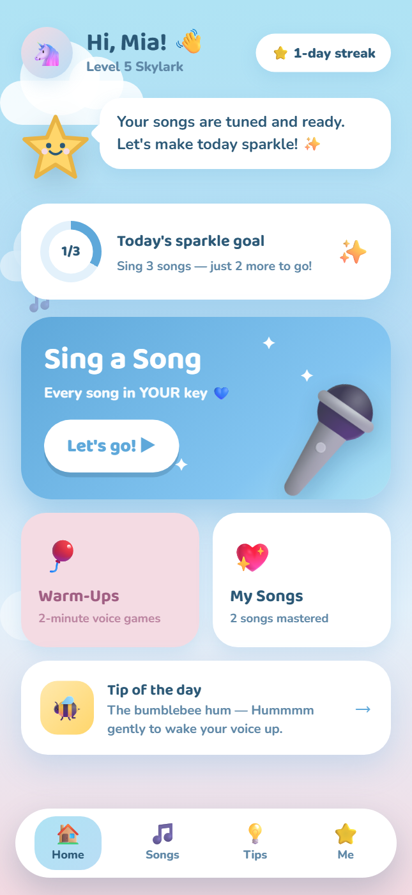
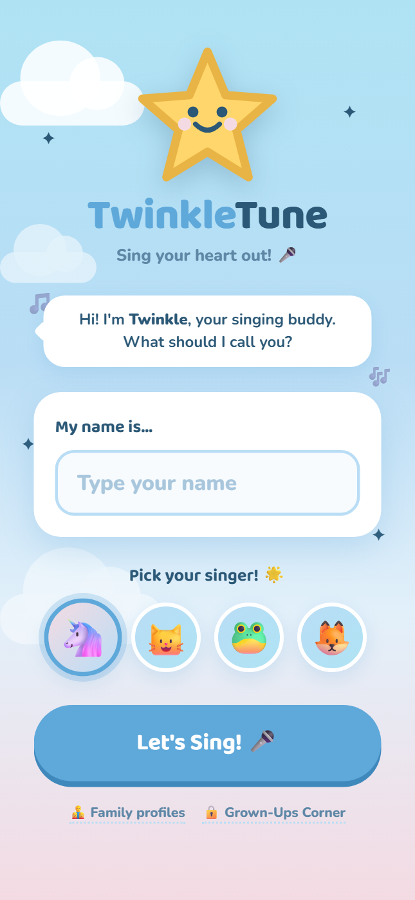
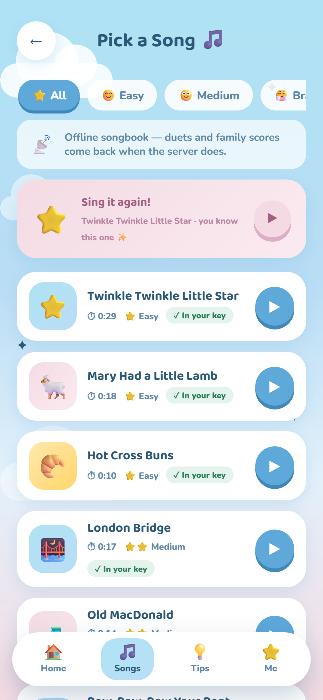
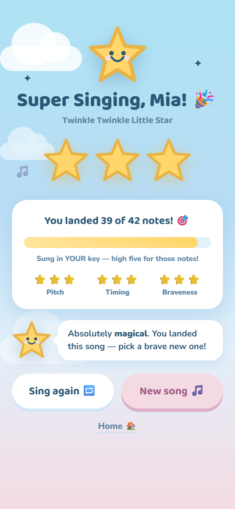

01
The song meets them.
A quick voice game finds their comfortable low and high notes. Then each melody moves into a key that feels natural.
A little studio for growing voices
TwinkleTune listens for a child’s comfortable range, shifts each song toward their key, and turns brave little notes into big, sparkly wins.
No account · No ads · Singing audio stays on the device

Find their voice in one playful minute
Sing closer to their key with live pitch play
Celebrate courage with every finish
Why TwinkleTune
Children explore more when the experience feels safe. TwinkleTune adapts the music, notices effort, and keeps the whole journey joyful.
A quick voice game finds their comfortable low and high notes. Then each melody moves into a key that feels natural.
Notes become sparkles, streaks, stars, and little celebrations. Feedback points forward without making mistakes feel heavy.
Pitch is detected in the browser. Singing audio is never uploaded, and solo play works without an account or a cloud profile.
How it works
01 FIND MY VOICE
Twinkle guides a one-minute low-to-high voice game. The comfortable range saves on the device, ready to tune every melody that follows.

02 PICK & SING
A friendly songbook shows which melodies are ready. During singing, syllables glide toward Twinkle while the star follows the voice in real time.

03 CELEBRATE
Every performance ends with a celebration of bravery and growth. Stars, sparkle totals, and gentle invitations make the next step feel exciting.

Inside the app
One clear action at a time, friendly words, and just enough magic to invite another tap.
Made for home
The browser app is ready for a single singer right away. Families can optionally run their own private home server for profiles, duets, photos, and a shared high-score board.
Explore the open-source projectOPTIONAL FAMILY SERVER
LOCAL-FIRST
OFFLINE READY
The stage is ready
Open TwinkleTune in the browser and start with one brave note.
Start singing free No download required · Best with headphones and a microphone